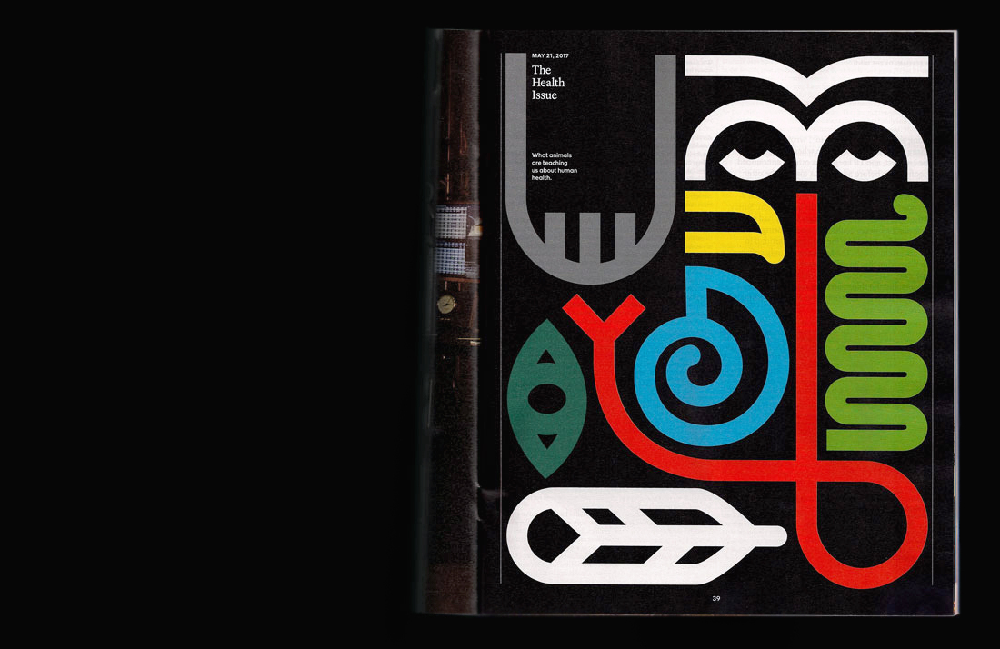
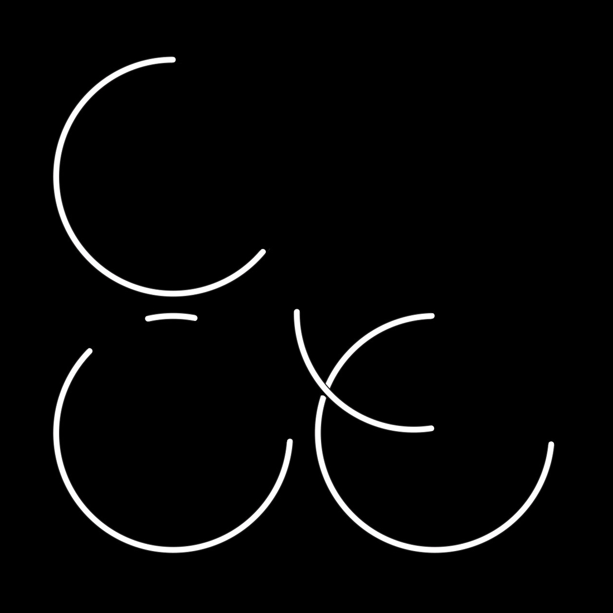

| Title | Kind | Client | Year | Thumbnail |
|---|---|---|---|---|
| Lux Issue 1 | Magazine issue | Lux | 2021 |  |
| Chromaticity | Art book | Away | 2020 |  |
| Chromaticity x Heretic Parfum | Perfume kit | Away | 2020 | |
| Here Issue 14 | Magazine issue (Design, art direction) |
Away | 2020 | |
| Red, White, Blue | Sticker set | Apply | 2020 |  |
| Planet's Mad | Album art (Design, illustration, custom type) |
Baauer, LuckyMe |
2020 | |
| Here Issue 13 | Magazine issue (Design, art direction) |
Away | 2020 |  |
| Be Water | Poster | Post-Contact (Curated by Jack Fahnestock) |
2020 |  |
| A Woman Called Moses | Book cover | Verso Books | 2020 | |
| Here Issue 12 | Magazine issue (Design, art direction) |
Away | 2020 | |
| NBA All-Star Weekend Chicago | Customization graphics | Nike | 2020 | |
| Here Issue 11 | Magazine issue (Design, art direction) |
Away | 2020 |  |
| Planetary Mine | Book cover | Verso Books | 2020 | |
| 24 Hours In | Postcards | Here Magazine, Away |
2019 | |
| Here Issue 10 | Magazine issue (Design, art direction) |
Away | 2019 | |
| For a Critique of the Political Economy of the Sign | Book cover | Verso Books | 2019 |  |
| Here Issue 9 | Magazine issue (Design, art direction) |
Away | 2019 |  |
| Here Issue 8 | Magazine issue (Design, art direction) |
Away | 2019 |  |
| Money and relationships | Illustrations | Topic | 2019 |  |
| Here Issue 7 | Magazine issue (Design, art direction) |
Away | 2019 | |
| Choke | Poster | Choke at XXXI Gallery (Curated by Elizabeth Goodspeed) |
2018 | |
| The Nike Tee | Zine | Nike | 2018 | |
| Pray for the Children | Film titles | Jared Hogan | 2018 |  |
| Here Issue 6 | Magazine issue (Design, art direction) |
Away | 2018 |  |
| Midst | Logo | Midst | 2018 | |
| Paradise Rot | Book cover (Design, photo illustration) |
Verso Books | 2018 |  |
| The Xenofeminist Manifesto | Book cover, interior (Design, photo illustration, custom type) |
Verso Books | 2018 | |
| The Political Education of Silicon Valley | Magazine feature | Wired | 2018 | |
| Mexico Retreat | Invitation, tote bag | [reads] | 2018 | |
| GQ | Magazine features | GQ | 2018 | |
| Revolution in the Air | Book cover (Design, collage) |
Verso | 2018 | |
| [reads] Events | Invitation suites | [reads] | 2017—18 |  |
| 10x17 | Album covers (Design, illustration) |
10x17 (Curated by Eric R. Mortensen and Skinny Ships) |
2017 |  |
| Tools for the Revolution | Poster (Design, illustration) |
n+1 | 2017 |  |
| Type: 2015–Present | Type specimen |
The New York Times Magazine | 2017 | |
| The Health Issue | Magazine special issue (Design, illustration, art direction) |
The New York Times Magazine | 2017 |  |
| The New York Times Magazine | Magazine weekly features (Design, art direction) |
The New York Times Magazine | 2015—17 |  |
| Puzzle Mania | Newspaper broadsheet (Design, art direction) |
The New York Times | 2016 | |
| The Education Issue: High School, U.S.A. | Magazine special issue (Design, custom type, art direction) |
The New York Times Magazine | 2016 | |
| Lit | Identity | Lit | 2016 |  |
| Chelsea Wolfe | Poster (Design, illustration) |
Sasquatch! Music Festival | 2016 |  |
| The Money Issue: The Middle Class | Magazine special issue (Design, art direction) |
The New York Times Magazine | 2016 |  |
| Various, for Metahaven | Various | Various | 2015 |  |
| Various, for Other Means | Various | Various | 2015 |  |
| Traces of Absent Things | Degree project | 2015 | ||
| The Assemblage of Parts | Writing (Design) |
2015 |  |
|
| On Space | Writing (Design) |
2015 |  |
|
| Shakey Graves | Poster (Design, illustration) |
Sasquatch! Music Festival | 2015 |  |
| Interview | Book (Writing, design) |
2015 |  |
|
| Lost Poems, Stolen Poems | Book (Writing, design) |
2015 |  |
|
| RISD Commencement 2015 | Identity | RISD Media | 2015 |  |
| Identity | RISD GD Department | 2015 | ||
| How To | Book | Pentagram | 2014 |  |
| Greenland Forest City Partners | Logo | Pentagram | 2014 |  |
| Big Questions | Books | 2014 |  |
|
| Susan Szenasy | Posters | RISD Media | 2014 |  |
| Material Play | Book | 2014 |  |
|
| 'Space' | Book | 2014 |  |
|
| 11:11 | Posters, postcards | 11:11 (Curated by Muriel Anderson) |
2014 |  |
| Graphic Design Now | Book | 2014 |  |
|
| Copy Making | Booklet, posters | 2014 | ||
| I Have So Many Memories | Website (Design, code) |
2014 |  |
|
| Oded Ezer | Posters | RISD GD Department | 2013 |  |
| You Think Too Much | Booklet | 2013 | ||
| Baths | Poster (Design, illustration) |
Sasquatch! Music Festival | 2013 |  |
| O'erheard | Book (Writing, design) |
2013 |  |
|
| Modern Signs | Manipulated photographs | 2012 |  |